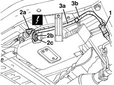

5020M90 system wiring harness - r r
- Path
- Procedures > 50 AUXILIARY UNITS > 5020 HEATER > 5020M supplementary independent heater > 5020M90 system wiring harness - r r
- Kind
- repair procedure (removal / refitting; the operation number is the code)
- Applies to
- all engines; all production periods
- Interactive page
- https://sloeber94.github.io/elrnDB-fMltpl/en/#/2891801
Applies to: all engines; production: da 09/03, da 04/02 a 08/03
 Removing
Removing
 Refitting
RefittingPlace the vehicle on a lift.
Raise the car.
1. Disconnect the electrical connection.
 | Name | Connector |
|---|---|---|
1 | Additional heater junction |
2. Disconnect the electrical connections (2a, 2b, 2c).
3. Disconnect the heater wiring (3a) from the band (3b) and keep it.

Applies to: all engines; production: da 09/03, da 04/02 a 08/03
Refitting
RemovingCheck that the wiring is not damaged.
Place the wiring in position and secure it using the band.
Connect the electrical connections .
Lower the vehicle and remove it from the lift.
Check that the additional heater is working properly.